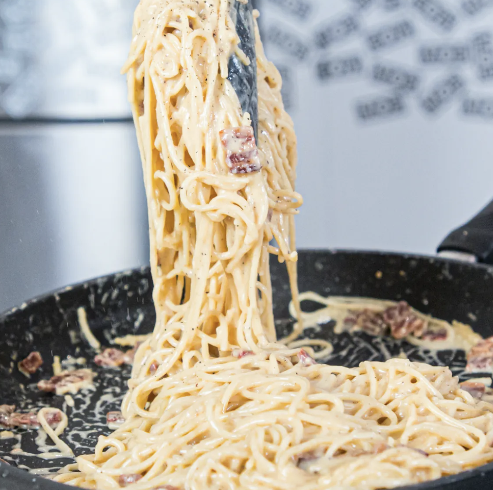

Carbonara

Ingredients
For the Carbonara...
- 6 egg yolks
- 300g streaky Smokey Bacon
- 75g Pecorino
- 75g Parmesan
- 500g Spaghetti
- 2 cloves of garlic
Steps
- Grate Parmesan and Pecorino.Set some aside.
- Whisk egg yolks with black pepper. Set aside.
- Sauté chopped bacon and garlic.
- Cook pasta until nearly al dente.
- Combine pasta, bacon, and garlic. Cook until silky
- Mix in the egg and cheese mixture.
- Adjust consistency with water if needed. Serve with parmesan and black pepper.
Full video recipe: